These are captures of the implemented website with the current bundled observations and local service. The Earth hero and satellite scene are preserved. Map imagery may vary when opened without network access.
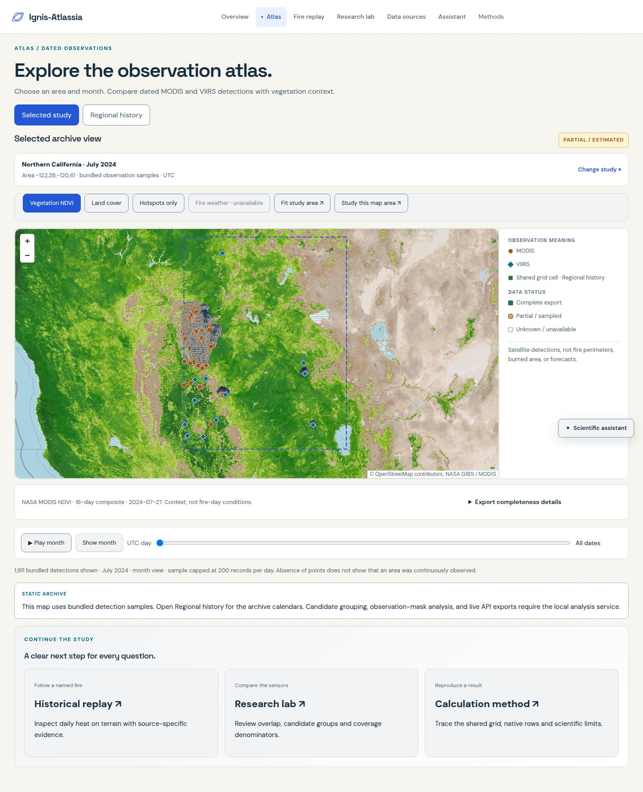
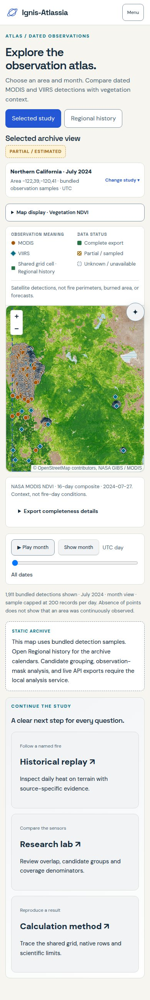
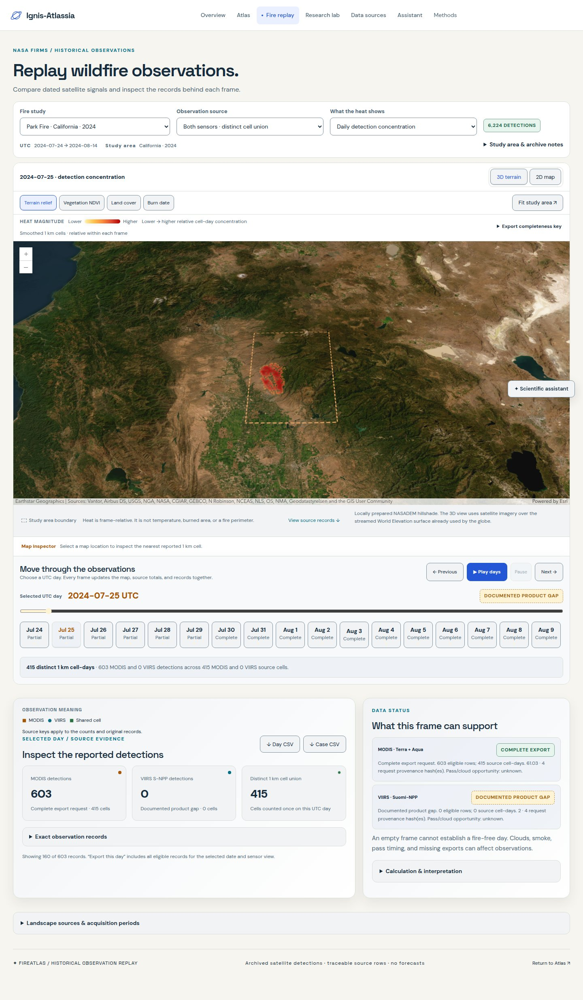
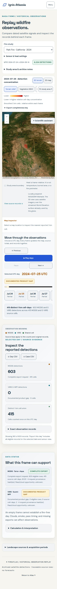
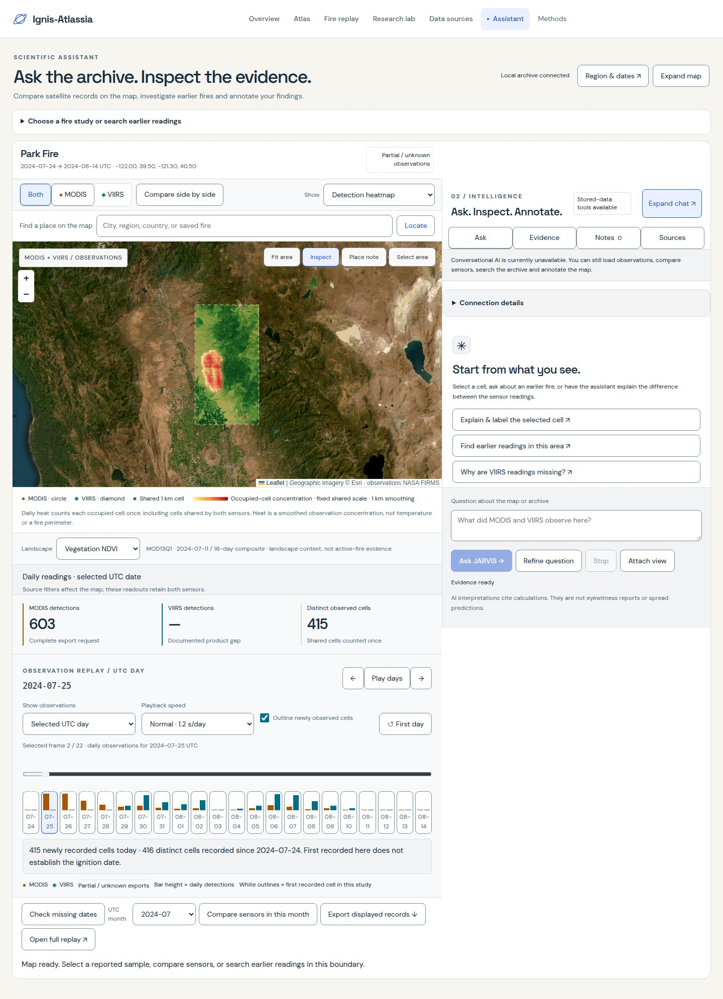
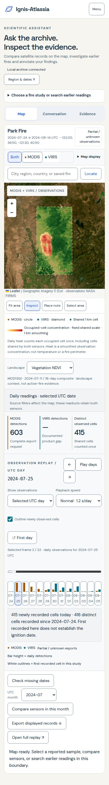
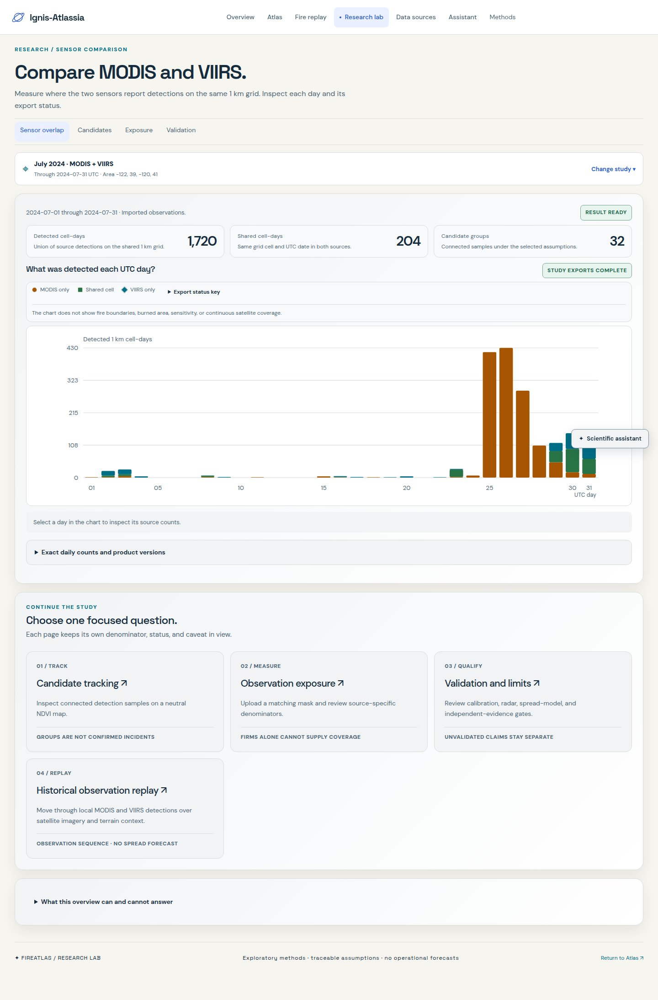
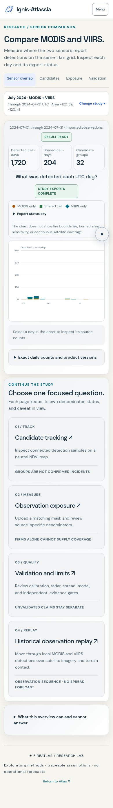
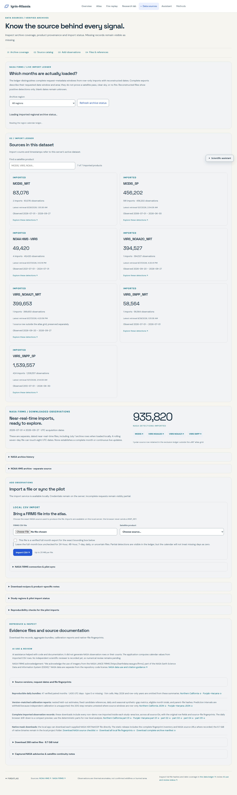
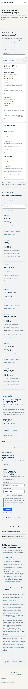
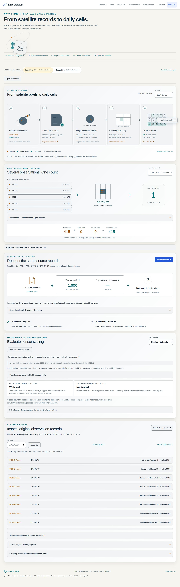
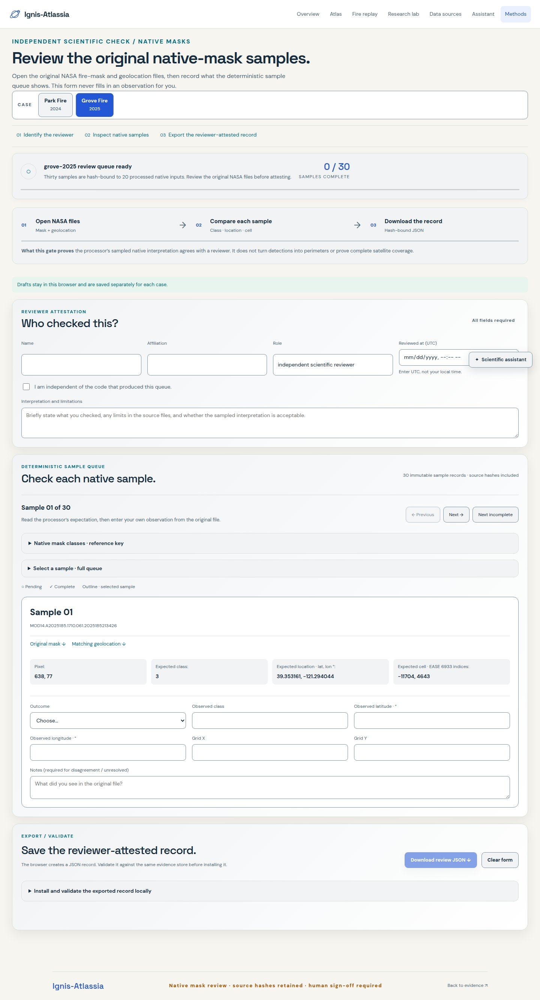